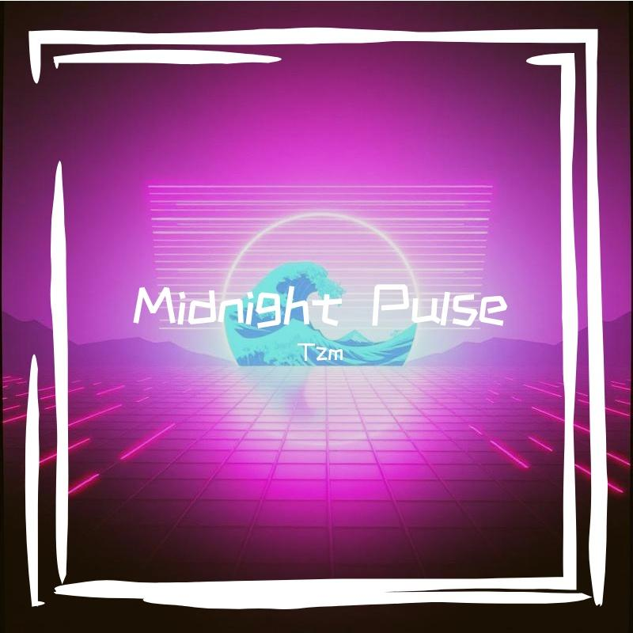
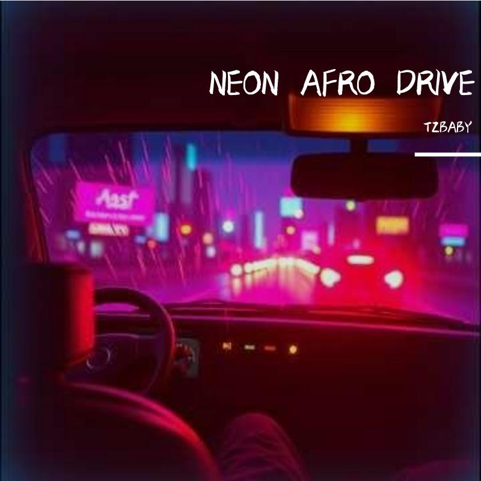

TZBABY我的音乐作品
以另一个名字，
把想象变成可以听见的作品。
 01 / 05
01 / 0510 TRACKS
NIGHT
十段独处时刻，从入夜到清晨
以 Lo-fi R&B、萨克斯、合成器与城市环境声，串起雨巷、地铁、酒吧和空酒杯里的十段独处时刻。情绪从未接通的呼唤与回忆中的迷失，走向和解、释然；最终回到木吉他、鸟鸣与晨风。不必逃离黑夜，也能迎接清晨。
在网易云听这张作品 ↗ 02 / 05
02 / 0510 TRACKS
HORIZON
世界音乐为骨，空灵电子为翼
一场从物理旅程走向心灵归宿的十站声音漫游。世界音乐与空灵电子交织，穿过沙漠、山脊、河流、森林与星空；从《NIGHT》结尾的开门声启程，最终在风中认出归属。旅程关心此刻的共鸣，以及如何成为自然的一部分。
在网易云听这张作品 ↗
03 / 0511 TRACKS
Midnight Pulse
从黄昏独处，到破晓重启
十首主曲与一首隐藏音轨，构成一张非线性的夜行声音地图。Afrobeats、French House、Industrial Techno、Neo-Soul 与 Ambient R&B 相继展开，中文、英语、法语、日语与无词吟唱随情绪流动。从暮色折纸到晨雾回响，午夜电台里还藏着摩斯密码与倒放人声的碎片。
在网易云听这张作品 ↗ 04 / 05
04 / 0506 TRACKS
Chuchotements Nocturnes
只属于两人的加密频道
六首全法语作品，融合 Ambient R&B、UK Garage 与 Post-Jazz。磁带噪音、雨声、地铁与老式电话，串起从初遇、分离到记忆回响的都市情感微叙事。掌心的摩斯密码、伞下沉默与站台上的挽留，让未说出口的话成为这张深夜氛围诗集的线索。
在网易云听这张作品 ↗完整曲目 06 首 ＋

05 / 0507 TRACKS
NEON AFRO DRIVE
关掉导航，打开耳朵
一张关于身体、文化与时间中“移动”的 Afrobeats 专辑，融合 Urban R&B 与 Future Highlife。前五首从街头启程，经过舞池与屋顶，走向破晓归家；两首彩蛋再把旅程带向红土与文化根源。《Red Soil Echo》回望来处，《Earth Pulse》以约鲁巴语吟唱落在认同与归属。
在网易云听这张作品 ↗